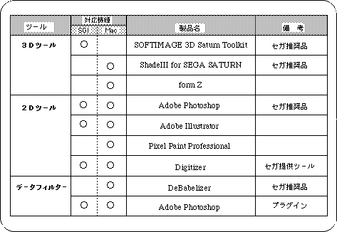
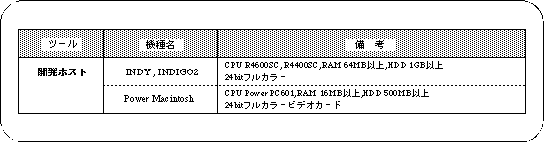
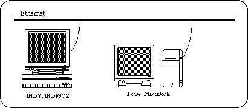

Return to previous page | Return to menu | Go to next page
There are several possible machine configurations for the designer to develop. However, designers are very dependent on software rather than hardware, so we will give representative product names and supported models for each required tool.

Sega recommends the following development environment:
Regarding hardware, SGI machines represented by INDY, INDIGO2, etc. for 3D tools , and Macintosh for 2D tools Use the series in a network environment. Refer to the table below and the diagram below for details of the machine configuration and specifications.


In the rest of this manual, we will continue with this combination.